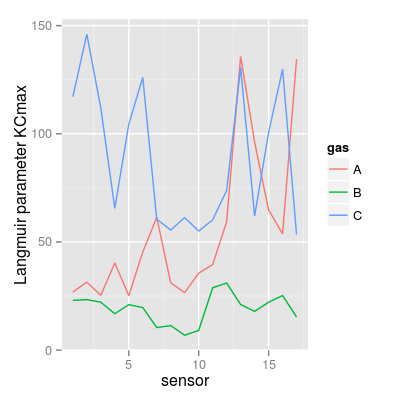

Dataset UNIMANsorption.
Description
The dataset contains the statistics on modeling the Langmuir isotherm on 17 UNIMAN sensors and 3 pure analytes at different concentration levels.
Details
Indeed, the isotherm extends the Langmuir isotherm for a single gas under a simplified assumption that molecules of the analytes in mixture do not interact with each other. Such property allows us to describe the adsorption process in the gas mixture explicitly by computing a single-adsorption Langmuir isotherm per analyte.
We estimate the parameters of the Langmuir isotherm by
fitting a linear model based on the short-term UNIMAN
dataset UNIMANshort. The resulted
coefficients of determination R2 of the models are
not below than 0.973 for analyte C, and slightly worse
for analytes A and B giving the minimum value 0.779.
The datasets has the only variable qkc of the
class array of three dimensions. The first
dimension encodes a sensor, and the second encodes a gas.
The third dimension represent four parameters extracted
from the Langmuir model:
K |
Sorption affinity in terms of the Langmuir isotherm. |
Q |
Sorption capacity in terms of the Langmuir
isotherm (not used in SorptionModel). |
KCmin |
The term KC in the dominator of
the isotherm at minimal concentration level (analyte
contribution in a mixture). |
KCmax |
The
term KCmax in the dominator of the isotherm at
maximum concentration level (analyte contribution in a
mixture). |
Examples
Error in find.package(package, lib.loc, verbose = verbose): there is no package called ‘chemosensors’List of 1 $ qkc: num [1:17, 1:3, 1:4] 10.02 9.51 9.52 6.57 9.19 ... ..- attr(*, "dimnames")=List of 3 .. ..$ : chr [1:17] "1" "2" "3" "4" ... .. ..$ : chr [1:3] "A" "B" "C" .. ..$ : chr [1:4] "Q" "K" "KCmin" "KCmax"[1] 17 3 4num [1:17, 1:3, 1:4] 10.02 9.51 9.52 6.57 9.19 ... - attr(*, "dimnames")=List of 3 ..$ : chr [1:17] "1" "2" "3" "4" ... ..$ : chr [1:3] "A" "B" "C" ..$ : chr [1:4] "Q" "K" "KCmin" "KCmax"



See also
SorptionModel